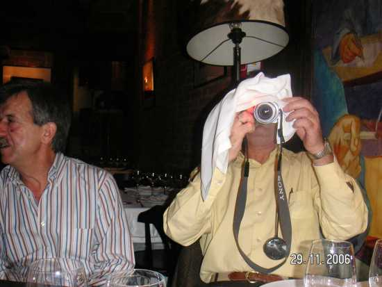

 |
|---|
El ínclito e inimitable JOAQUÍN haciendo experimentos con nueva cámara digital SONY CYBER-SHOT DSC-H2 (o algo parecido), de 12 aumentos de Zoooooooooooooooooooooom, tratando de conseguir una buena iluminación para inmortalizar tan fausto acontecimiento. Fue la pera limonera, un contínuo reir y reir en toda la cena, como os podéis imaginar. Merece la pena hacer un esfuerzo y buscar un hueco en nuestros compromisos familiares y laborales. Es lo que os perdeis los que estais en la periferia. (Aportación de Jaime G. Merino) |
|---|